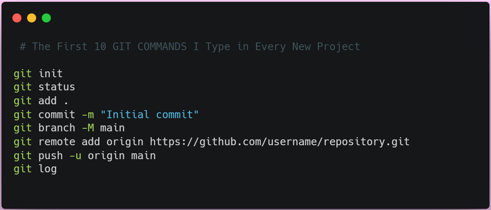

Push your project
Stage everything, commit, and push so GitHub has the files it needs to serve.
bash
git add .
git commit -m "Initial commit"
git push origin main
Make sure main is the branch you use for deployment.
